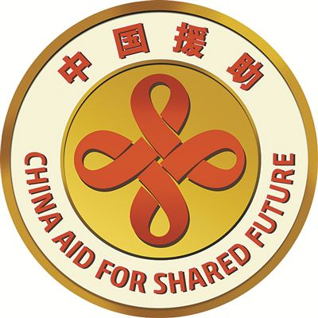
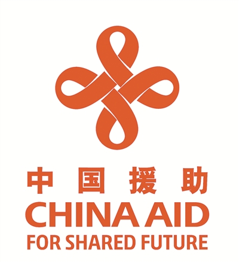

“最近搜集不到啥情报”，柴禾妞抱怨，“好像人民民主专政铁拳正在到处塞口球，之前那许多喧哗上等的名嘴们都消停了”。
“那就回顾中长期舆论趋势吧，专挑那些万里之遥不接地气的话题，看看色目情报掮客怎么话锋一转把矛头指向境内”，郭春海指挥，“比方说坐落于国际一流和谐宜居之都的高学历精英社交圈，似乎对花旗国大选保持高度热情，无论是否有过留学经历，指点江山激昂文字的时候，都以‘人在美国刚下飞机’开头”。
“我可是最近才开始从事情报工作”，柴禾妞抱怨，“以前的事情我不知道，当时根本不感兴趣”。
“那我跟你说，这个站点刚建立的时候只是在高学历精英当中内部测试，开放注册大约在奥巴马大统领连任之后，江湖人称‘绿乎’，但凡质疑傻哔绿人为非作歹的回答一律以‘政治敏感’理由‘亦当删去’”，郭春海回忆，“这种情况大约持续了四年，到了川普大统领兲命昭昭冻蒜之后风向就变了，江湖人称‘哔乎’，高票回答动辄‘吾心吾行澄如明镜，所作所为皆为正义’憧憬着第三圣殿恭迎中兴之主的大场面”。
“现在又开始吹人类命运共同体了，试看将来的环球必是赤旗的世界，全世界无产阶级联合起来”，柴禾妞看着最近每次刷新都雷打不动的在首页今日头条位置醒目应景推荐的花旗国民主党初选相关话题，“难道准备改名‘共乎’了不成？”
“你觉得无产阶级可能联合起来么？在资产阶级眼皮底下沟通串联？随时都可能有党国栋梁伸出一根小指头点一下鼠标炮制钦定死机中断通讯？”郭春海反问，“在那之前，全世界资产阶级就已经联合起来了也，或者说经济全球化”。
“我想也是，高举赤旗的阵营，背后同样有资本支持”，柴禾妞同意，“在舆论当中，傻哔绿人组成的民间武装才是恐怖组织，革命导师率领的红色游击队就是播种机、宣传队”。
“那是现在”，郭春海纠正，“当年‘输出革命’的时候，红小将的侵略性和狂热不比现在傻哔绿人‘输出信仰’要低”。
“现在‘输出革命’已经臭了大街了”，柴禾妞评价，“估计‘输出信仰’也快了”。
“所以才会换汤不换药新瓶装旧酒嘛，文曲星最擅长玩弄文字游戏”，郭春海提醒，“比方说‘输出援助’什么的”。
“你是在暗示这次瘟疫绝对不仅仅限于九省通衢甚至境内？”柴禾妞对郭春海说话总是含糊其辞做高深莫测状已经习惯了，并逐步开始模仿，“只要是在历史の五对负重轮之前的螳臂挡车の跳梁小丑，都会被瘟疫碾为齑粉？”
“是啊，经济危机就是生产过剩导致的，主席台前三排绝对不会承认问题出现在分配环节，只会叫嚣着去产能”，郭春海说，“刀刃怎么可能割自己的刀把，肯定是惦记着出去捅别人，只有口称武德充沛却没那本事冲出亚洲走向世界的时候，才会窝里横之余自杀或自残，做缩卵怂货窝囊废状”。
“中国将启用新版对外援助标识和徽章于2020年1月1日起正式启用，新版对外援助标识将更好传递人类命运共同体理念”，柴禾妞看郭春海点开一个链接①让自己看，就顺口把标题念出来，“武德充沛网发布的武德充沛报转载的党国高音喇叭发表的官府张贴的告示”。
“你看这个标志像什么？”郭春海提醒，“可别认为就是个简单的中国结”。
“希帕索斯永垂不朽”，柴禾妞看着郭春海惯用的浏览器之书签栏上面那个快捷方式。
未完待续
- ① 《解放军报》：《中国将启用新版对外援助标识和徽章》
 
新版中国对外援助标志 